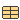

Records with power flow data to simulate various scenarios.
This subpackage contains power flow data records to initialize the simulation models.
Extends from Modelica.Icons.RecordsPackage (Icon for package containing records).
| Name | Description |
|---|---|
| Contains the templates to organize the data | |
| Records containing the power flow data | |
|  PFScenarios | Drop-in component to select the power flow scenarios |
 Example1.PFData.PFScenarios
Example1.PFData.PFScenariosDrop-in component to select the power flow scenarios
Extends from Modelica.Icons.Record (Icon for records).
| Name | Description |
|---|---|
| replaceable record Bus | |
| replaceable record Loads | |
| replaceable record Trafos | |
| replaceable record Machines |